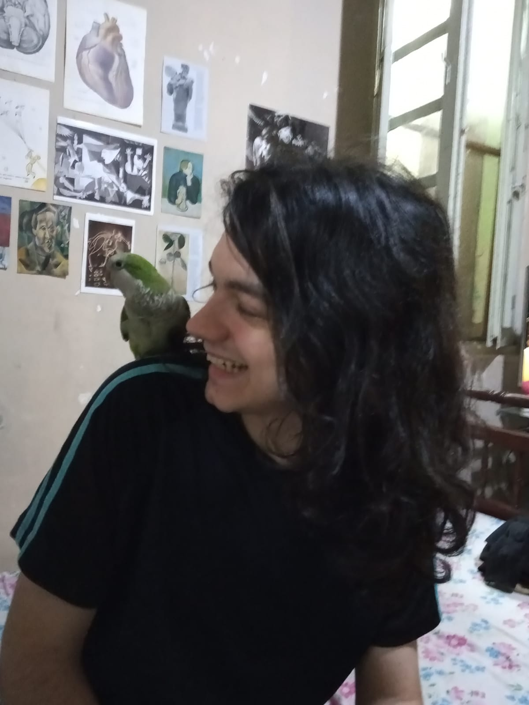

Meu nome é Nicolas Sosa Machado, tenho 21 anos, atualmente estou cursando o 5º semestre do curso de ciência da computação na Universidade Federal de Pelotas(UFPEL).
Durante um ano, trabalhei como freelancer com desenvolvimento web especificamente com a criação de landing pages utilizando principalmente HTML, CSS, Javascript e PHP.
Além disso, fora da área da computação, me formei como técnico em química pelo Instituto Federal de Pelotas(IFSUL), onde também estagiei durante 6 meses na área de eletroquímica.